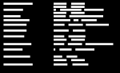

I'd like to take a moment to thank the several dozen people who helped make this possible by drawing icons...
I just submitted a few nouns to the Noun Project, which is the right thing to do considering I’m using a few of their nouns in a new project. When you submit your icons to NP, you have two options: CC-BY and CC0. CC-BY has become the standby for design good guys, and you can see that hold true if you browse through NP’s catalog of icons. CC0, on the other hand, is public domain.
At first, I thought what everyone thinks when they’re about to license something they made: “Attribution has value.” Which is well and good, until you think about what icons are used for and how they’re used. CC-BY for an artistic piece that will be used to derive another artistic piece is great, and manageable, and will end up with a nice little attribution that fulfills the above value proposition and doesn’t place an onus on the usage of your work that precludes its integration into further works.
But icons are used in great numbers and as a result I think CC-BY for icons causes damage to their usage and thus to the free flow of information that Creative Commons licensing is meant to support. I don’t think the intention of icon creators is to force a developer into keeping a long attribution list so that every little star and Roman helmet that appears in my interface can be pointed back to an individual creator. It’s absurd that I’ll need a blockbuster movie-like credits roll because I want to use a couple dozen icons in an interface. I’d prefer even a no-attribution but viral (like GPL) license over CC-BY, and for my own (paltry catalog of currently four) icons I’m using CC0.
So, please, for common sense and usability, CC0 your icons, don’t CC-BY them.